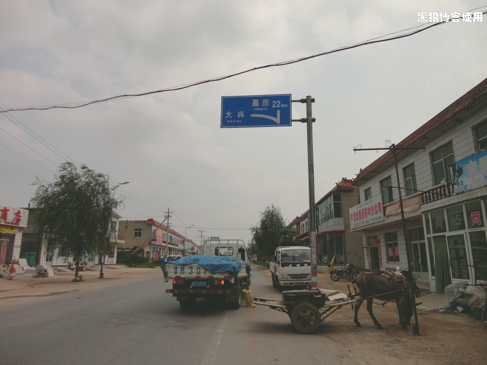
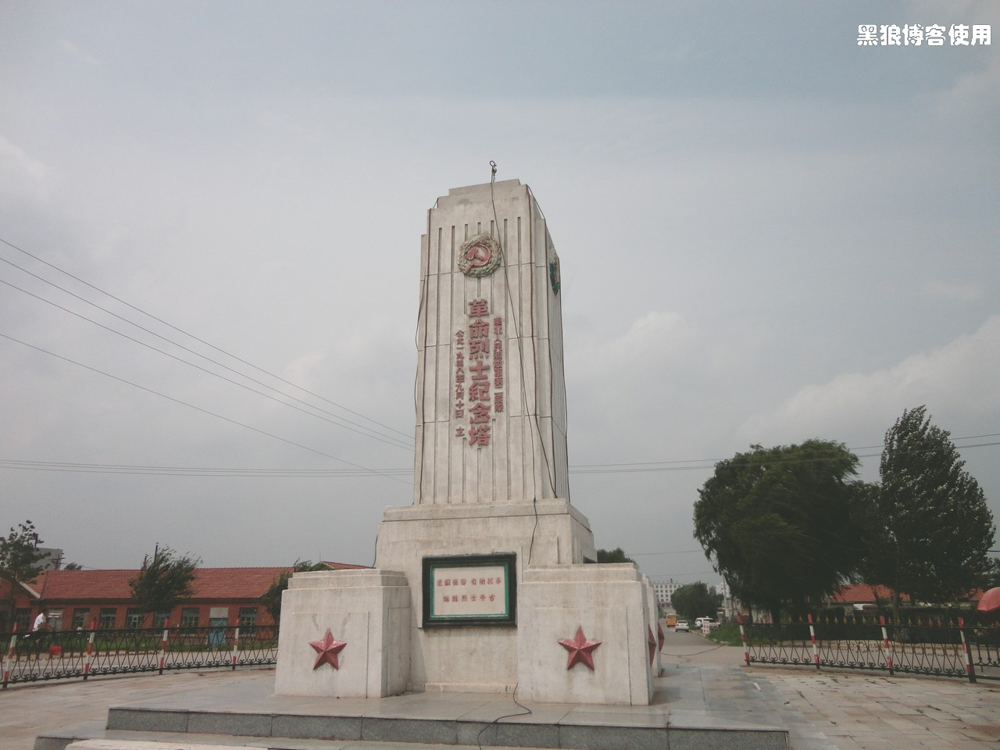
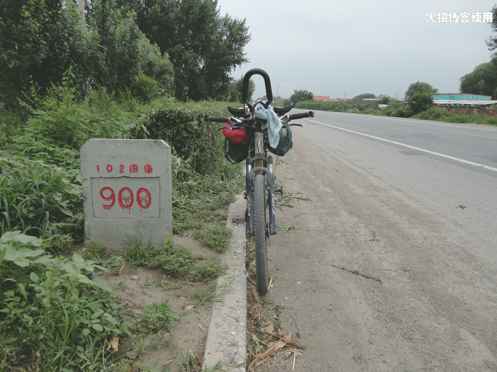
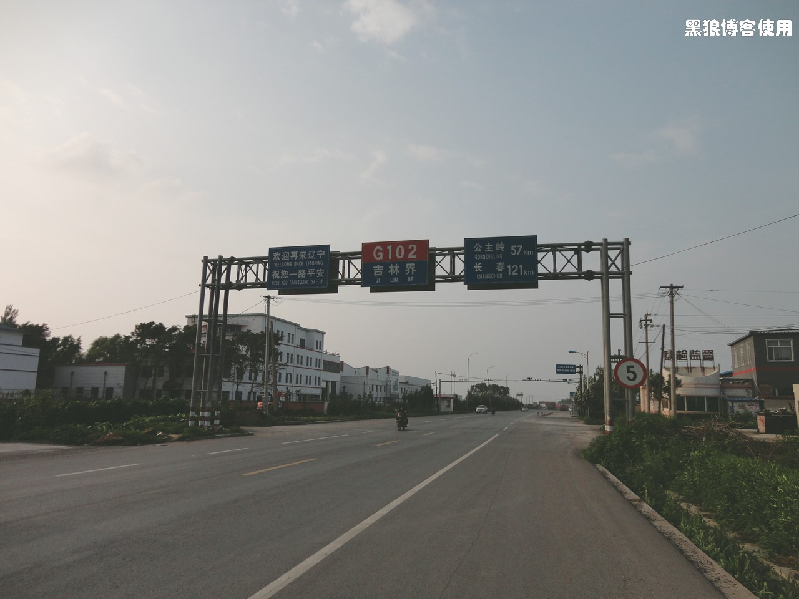

黑狼语录：
- “你准备好了吗？”出发之前，我问过我自己，身心两个方面。
- “你真的准备好了吗？”昨晚（第五天结束后），我再一次问我自己，尤其是身心两个方面。
8:15 从法库出发，今天的腿早上起来就非常酸痛，估计要活动 40 分钟才能缓解。今天的天气比较阴沉，希望我再次能赶在大雨的前面。
胡有理同志这几天也是北京到长春，又到吉林，再到佳木斯。今天早上坐了一架 60 人小飞机，从佳木斯到哈尔滨，说是螺旋桨的，昨晚给我打电话，俨然一幅英勇赴义的样子。我说：“你要是害怕就坐火车吧”，她又嫌火车太慢。
不过这几天她都是在天上飞，我却是一直在地上爬。难道我就是那只俊蛤蟆，她是那只肥天鹅吗？
11:04 骑行了 43 公里，法库到昌图这一段，一个坡连着一个坡，体力消耗比较大，让腿部更加的不舒服。
11:45 跑了 53 公里，看到了去大兴的牌子，仿佛是归途一样。地名 : 亮中桥。
（马路中间的英雄纪念碑）
12:30 途径昌图县老城区，马路中间的英雄纪念碑。走了 66.6 公里，还有大约 7 公里到达中午的休息地：昌图。
13:55 饭后继续出发，上午跑了75.5 公里。在昌图吃完了午饭，味道还不错。本来想多休息一会儿，内急，提早出发，希望早些碰到加油站或者无人区。
14:48 到达 G102 的 900 公里处。我的码表显示我走了 906 公里，看来新民到昌图这段路，节省了 30-50 公里吧（我中间还有绕行路程）。
下午 14 点到 15 点左右的这段路，走的异常的疲惫，感觉车子特别的沉重。摸了好几次车胎，有气呀。估计是上坡，不过我看了半天，也没看出有坡，看来是眼睛习惯了坡路，已经视而不见了。
17:20 今天没有太着急赶路，并且上下坡比较多，也快不起来。再有20 分钟，就应该休息了，现在跑了 122 公里。
17:26 走出辽宁，进入吉林。
进入四平市区，高中老同学就在路上开着车子等我了，然后又给我开好宾馆，又请我大吃了一顿火锅，非常的热情，回到了熟悉的家乡，就是有不一样感觉呀。老同学还非常热情的要明天开车把我送回伊通县，哈哈，被我拒绝，岂能半途而废。
很幸运，今天无雨。
总共骑行了 130 公里，最大时速 46.4 公里 / 小时。胜利在望，心情舒畅。